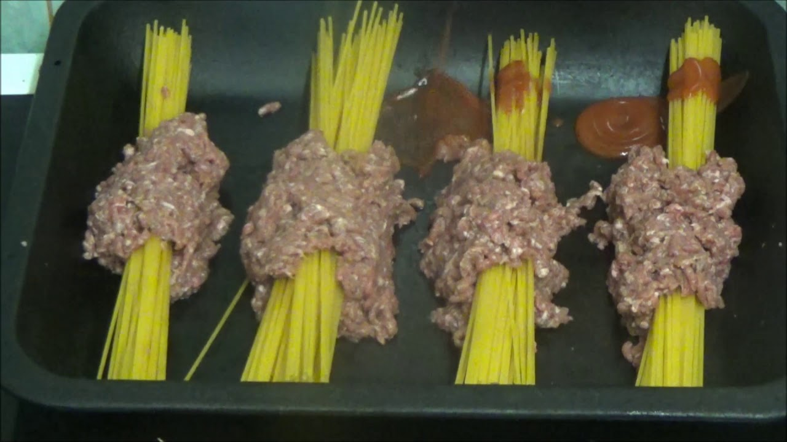

Spaghetti Bolognese Kay Style

This modern take on a classic dish will open your eyes to new culinary possibilites!
by encasing your spaghetti inside your meatballs you'll bring some fun to the dinner table and experience interesting new textures!*crunch* yum!
Ingredients:
- 2 eggs
- 1 jar of Tomato sauce
- 1 onion
- 800g of Mince Meat
- Spaghetti
- parsley
Steps:
- beat the eggs.
- put the mince meat into a mixing bowl and add the beaten eggs and mix together.
- form a ball out of the eggy and wrap it around the middle of a bushel of spaghetti sticks. Repeat for each serving.
- place spaghetti into a baking tray and pour half of the tomato sauce over the top.
- cook for 20mins on medium high.
- coarsley chop the onion.
- take spaghetti out of the oven and add onion. Pour remainder of tomato sauce and add parsley to taste.
- bake for an additional 20mins.
- enjoy!